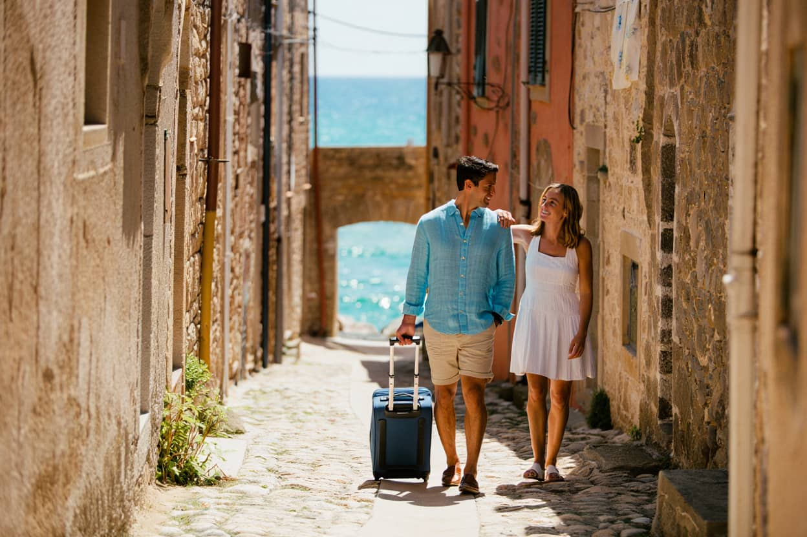

Kako izbrati namestitev za pravi počitek namesto za lepe fotografije

Namestitev lahko oddih podpre ali pa ga skoraj uniči. Težava je v tem, da veliko ljudi izbira predvsem po videzu. Lep balkon, dobra svetloba, urejena kopalnica in privlačne fotografije so seveda prijetni, vendar niso isto kot kakovosten počitek. Če je cesta pod oknom prometna, če je postelja slaba, če je klima glasna ali če je do vseh osnovnih stvari vedno potreben avto, boste to občutili precej bolj kot estetski detajl na naslovni fotografiji. Pri izbiri je zato smiselno postaviti drugačna merila.
Najprej razmislite, kaj na poti najbolj vpliva na vaše počutje. Nekdo potrebuje mir in tišino. Drugemu več pomeni bližina centra ali plaže. Tretji želi dobro izhodišče za hojo. Ko to določite, postanejo ocene in opisi veliko bolj uporabni. Slaba strategija je, da gledate splošno povprečje ocen brez razumevanja, zakaj je nekdo nekaj pohvalil ali kritiziral. Dobra strategija pa je, da v ocenah iščete točno tiste elemente, ki so pomembni za vas: spanec, dostopnost, parkiranje, čistočo, temperaturo, kakovost zajtrka in realno oddaljenost od ključnih točk.
Pri tem veliko pomaga, če imate že prej razčiščen namen potovanja. Če ga še nimate, je koristen uvod prispevek o načrtovanju oddiha brez stresa. Za tiste, ki želijo potovati počasneje in bolj premišljeno, pa je smiselno prebrati tudi zapis o trajnostnem potovanju in digitalnem odklopu. Dobra namestitev ni univerzalna. Dobra je tista, ki služi ritmu vašega oddiha, ne pa Instagram predstavi, ki vam po prihodu ne pomaga kaj dosti.
Pomembno je tudi, da preverite lokacijo iz praktičnega vidika. “Pet minut do centra” pogosto pomeni pet minut z avtom, ne peš. “Blizu plaže” je lahko res, vendar morda samo do prve betonirane točke, ne pa do prijetnega dostopa za kopanje. Tudi pri apartmajih v naravi se splača preveriti, koliko je dejansko sence, kakšna je pot do hiše in ali je lokacija primerna za prihod z običajnim osebnim vozilom. Manj idealiziranja pomeni manj razočaranja.
Najboljša odločitev je običajno tista, ki vam poenostavi dneve. Če dobro spite, če vam zjutraj ni treba reševati osnovne logistike in če se v prostor zvečer vrnete brez občutka napora, je namestitev opravila svoje delo. Vse ostalo je dodatek. Na dopustu ne živite v galeriji slik. Živite v ritmu, ki naj bi vas popravil, ne izrabil. Zato je dobra izbira praviloma bolj tiha, bolj praktična in manj kričeča, kot si ljudje predstavljajo med brskanjem.